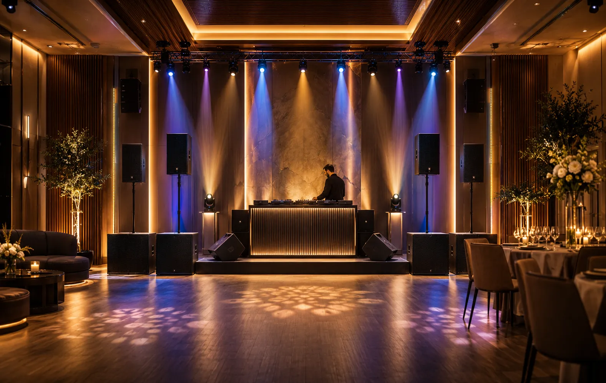
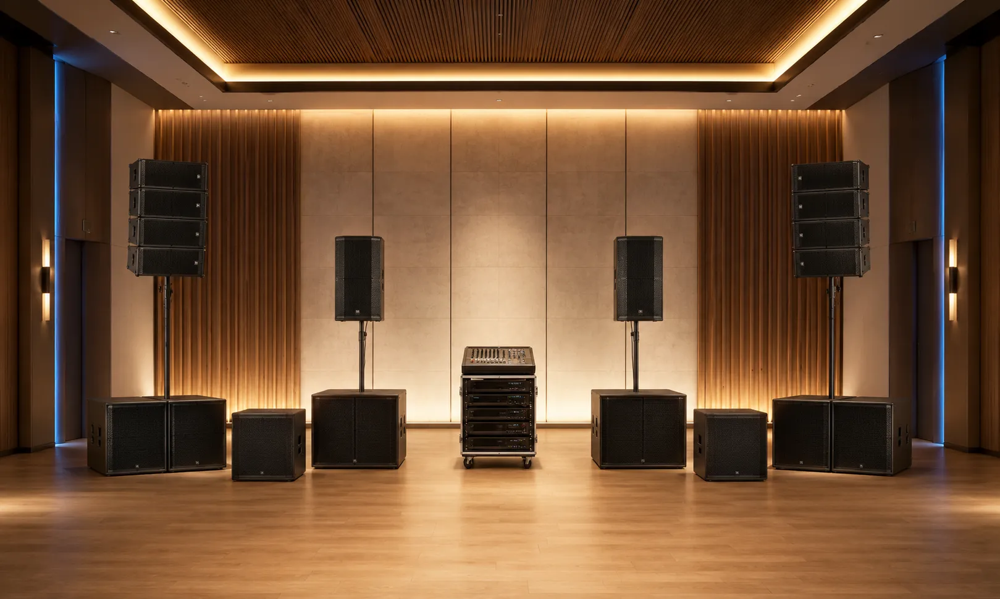
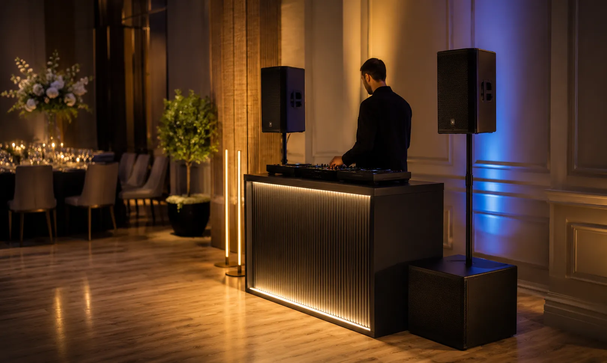
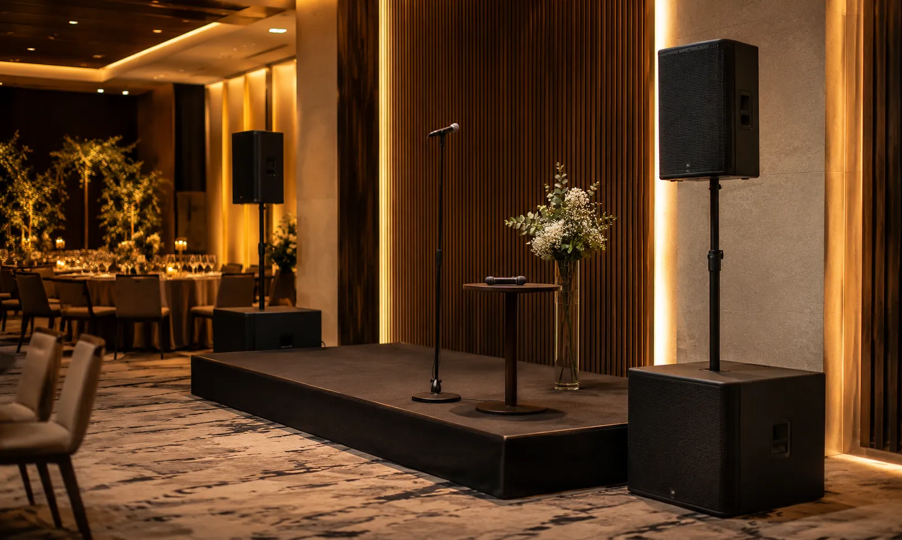
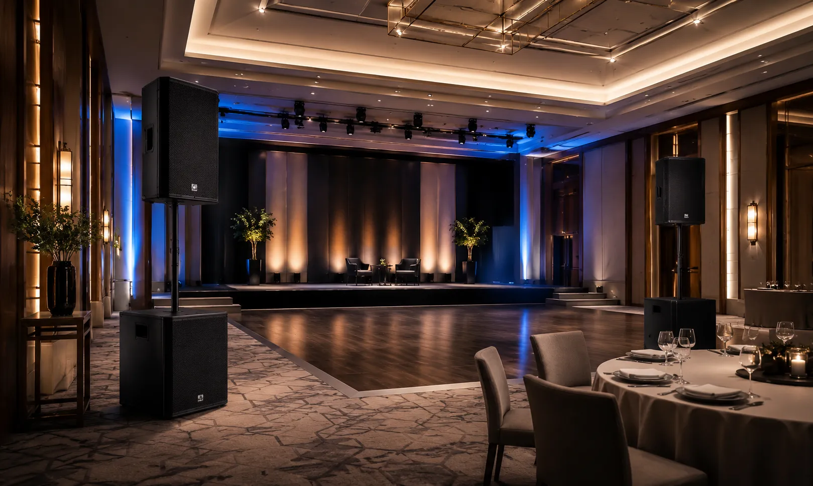

Audio para Sonidos y DJ: PA, subgraves, mezcla y monitoreo.
Diseñamos e integramos sistemas para DJs, sonidos móviles, salones,
operadores y eventos.
Antes de seleccionar equipos revisamos dimensiones, audiencia,
montaje, cobertura, SPL esperado, ruido ambiental, altavoces activos o pasivos, subgraves,
impedancia, potencia, reserva de amplificación, mezcla, microfonía, monitoreo, energía,
cableado, transporte y posibilidad de crecimiento.
Un buen sonido no solo debe escucharse fuerte: debe escucharse claro
Para Sonidos y DJ, la cobertura, el nivel de presión sonora, la respuesta en baja frecuencia, la inteligibilidad de voz, el monitoreo, la energía y la facilidad de montaje deben analizarse como un solo sistema.
No recomendamos altavoces, subwoofers o amplificación sin conocer primero espacio, audiencia, altura de montaje, tipo de contenido, SPL esperado, ruido, distancias de cableado, alimentación eléctrica, frecuencia de uso, transporte y crecimiento previsto.
Cobertura dimensionada
Altavoces y ubicación se definen según audiencia, patrón de dispersión, distancia, altura de montaje y uniformidad requerida.
Margen operativo
Potencia, procesamiento y protección se calculan para evitar operar el sistema continuamente al límite de su capacidad.
Montaje y cableado
Se consideran energía, señal, distribución eléctrica, conectores, soportes y recorridos de cable según el montaje real.
Capacidad de crecimiento
Cuando el proyecto lo permite, dejamos reserva en canales, potencia, señal y accesorios para futuras ampliaciones.
Evita un sistema que quede corto en cobertura, potencia o conectividad
Comprar altavoces, subwoofers, amplificación o consola por separado sin revisar el sistema completo puede dejar puntos sin cobertura, falta de subgrave, pocos canales, impedancias incompatibles, potencia insuficiente o una distribución eléctrica inadecuada.
Nuestro enfoque parte del dimensionamiento: cantidad y patrón de altavoces, cobertura, SPL objetivo, subgraves, impedancia, potencia por canal, reserva del amplificador, procesamiento, número de entradas y salidas, microfonía, monitoreo, energía y cableado.
Falta de potencia
Cuando cobertura, patrón de dispersión o SPL requerido no se calculan, el sistema puede generar zonas débiles o trabajar cerca de su límite.
Graves débiles
La cantidad, ubicación y capacidad de los subwoofers deben relacionarse con audiencia, recinto, contenido, nivel objetivo y sistema principal.
Voz poco clara
Microfonía, ganancia, procesamiento y cobertura deben coordinarse para mantener inteligibilidad en conducción, anuncios y presentaciones.
Montaje complicado
Señal, energía, distribución eléctrica, conectores, soportes y cableado deben definirse antes del montaje para reducir improvisaciones.
Integramos el sistema completo: PA, subgraves, mezcla, microfonía, monitoreo y montaje.
La solución se dimensiona según audiencia, dimensiones, cobertura, SPL esperado, contenido, montaje, altavoces activos o pasivos, subgraves, impedancia, potencia, número de canales, energía, transporte y crecimiento.
Sistemas PA (Bocinas)
Altavoces activos o pasivos seleccionados según patrón de cobertura, distancia, altura de montaje, SPL objetivo, impedancia y arquitectura del sistema.
Subwoofers profesionales
Subwoofers activos o pasivos dimensionados según audiencia, volumen del recinto, extensión de baja frecuencia, nivel objetivo y capacidad del sistema principal.
Consolas y mezcladoras
Consolas, mezcladoras, controladores e interfaces seleccionados según fuentes, entradas, salidas, buses, procesamiento, grabación y forma de operación.
Iluminación para eventos
Iluminación LED, cabezas móviles, efectos y control DMX cuando forman parte del alcance, considerando energía, montaje, señal y operación.
Micrófonos y monitoreo
Microfonía alámbrica o inalámbrica y monitoreo seleccionados según movilidad, número de canales, entorno de radiofrecuencia y necesidades del operador o DJ.
Soportes y cableado
Soportes, herrajes, conectores, cajas, extensiones y cableado de señal o potencia seleccionados según carga, distancia, movilidad y condiciones de montaje.
Tu sistema de audio como herramienta de trabajo profesional
Podemos integrar altavoces, subwoofers, amplificación, procesamiento, consola, microfonía, monitoreo, soportes, cableado, distribución eléctrica e iluminación complementaria según el tipo de evento y montaje.

Solución integral
Sistema escalable
DJ móvil y setups
Sonorización de eventos
Sistemas de audio PAUn proceso claro para equipar tu sonido o proyecto DJ
Un proceso estructurado para definir audiencia, cobertura, SPL, potencia, señal, energía, montaje y equipos antes de cerrar el proyecto.
Entendemos tu uso
Definimos si eres DJ móvil, proveedor de sonido, operador, salón, producción o proyecto de entretenimiento, y qué tipo de eventos cubrirás.
Revisamos capacidad
Consideramos dimensiones, asistentes, ruido, montaje, cobertura, SPL esperado, contenido, energía, transporte, cableado y frecuencia de uso.
Diseñamos el sistema
Calculamos cantidad de altavoces, subwoofers, impedancia, potencia, margen, procesamiento, consola, microfonía, monitoreo, energía y accesorios.
Cotización formal
Te entregamos alcance, equipos, servicios, tiempos, supuestos, exclusiones y pendientes técnicos por confirmar.
Integración
Realizamos suministro, conexión, configuración, pruebas y ajustes conforme al alcance aprobado.
Capacitación
Explicamos ganancia, ruteo, procesamiento, niveles, monitoreo, conexiones y operación básica del sistema integrado.
No seleccionamos bocinas por separado: dimensionamos el sistema PA completo
Un sistema PA requiere coordinar cobertura, SPL, subgraves, amplificación, impedancia, procesamiento, mezcla, microfonía, monitoreo, energía, cableado, montaje y transporte.
Nuestro enfoque es validar compatibilidad y margen operativo para que cada componente trabaje dentro de sus condiciones previstas y el sistema pueda crecer de forma ordenada cuando el proyecto lo requiera.
Tecnología profesional para Sonidos, DJs y eventos
- Definición de audiencia y tipo de evento
- Dimensionamiento de cobertura, SPL y potencia
- Equipos originales y tecnología profesional
- Compatibilidad de altavoces, amplificación y señal
- Cableado, energía y montaje según proyecto
- Pruebas, ajustes y capacitación básica
- Capacidad de crecimiento según alcance
Marcas profesionales para soluciones de alto rendimiento
Seleccionamos tecnología profesional según cobertura, SPL, potencia, impedancia, procesamiento, mezcla, microfonía, monitoreo, conectividad, montaje y presupuesto.
Dudas comunes antes de equipar un Sonido o DJ
Estas son algunas de las variables que revisamos antes de definir el alcance técnico y la cotización.
Diseñemos tu proyecto de Sonido o DJ
Compártenos tipo de evento, dimensiones, audiencia, montaje, equipo existente, energía, transporte y necesidades de audio para revisar el alcance técnico.
Equipemos tu
Sonido o DJ
Podemos orientarte sobre altavoces PA, subwoofers, amplificación, procesamiento, consolas, microfonía, monitoreo, soportes, cableado, energía e iluminación complementaria.
Solicita asesoría para tu sistema PA o DJ
Completa el formulario y se abrirá WhatsApp con la información estructurada. Incluye tipo de evento, audiencia, medidas aproximadas, equipo actual, montaje, energía disponible y necesidades de crecimiento cuando las conozcas.